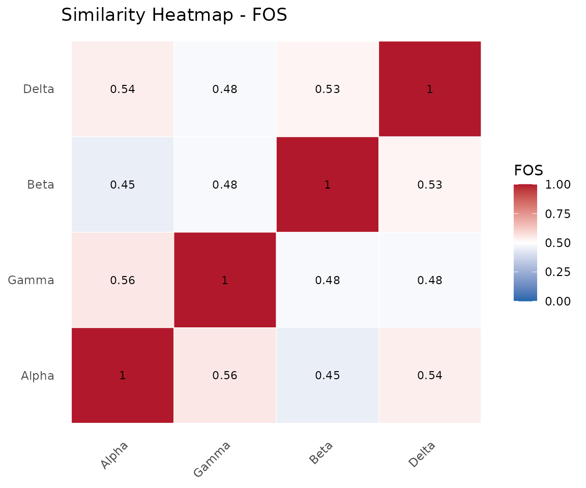
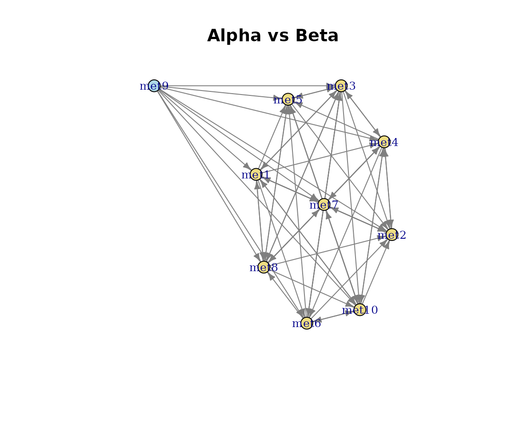
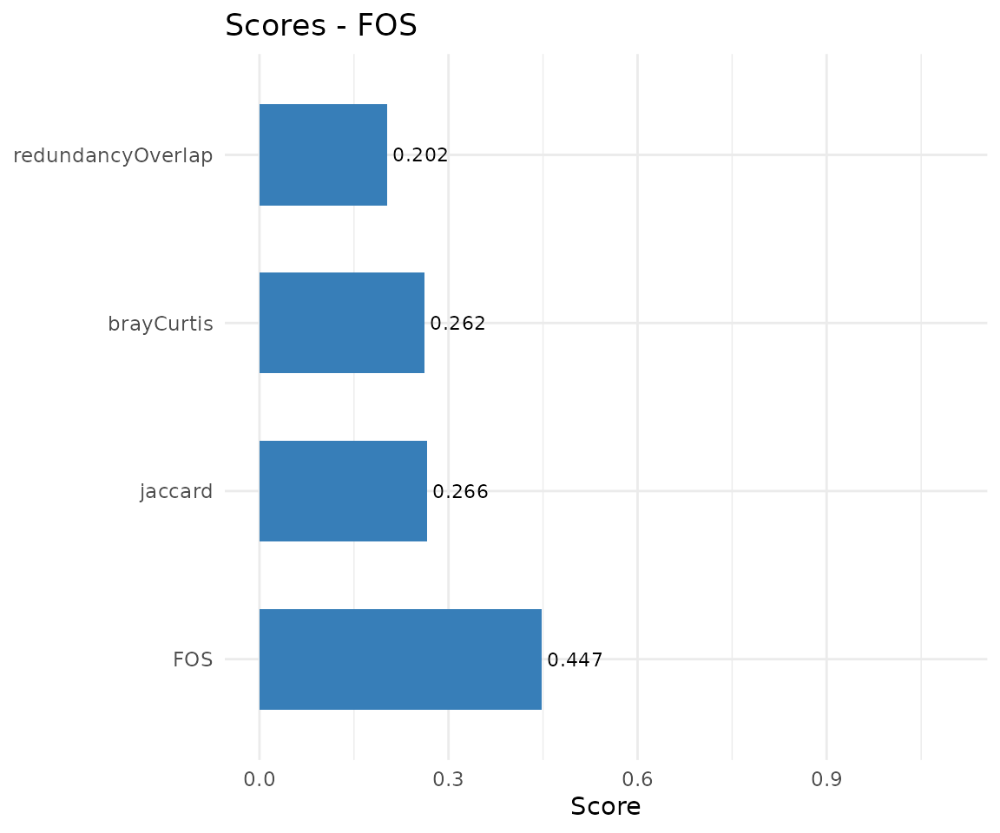
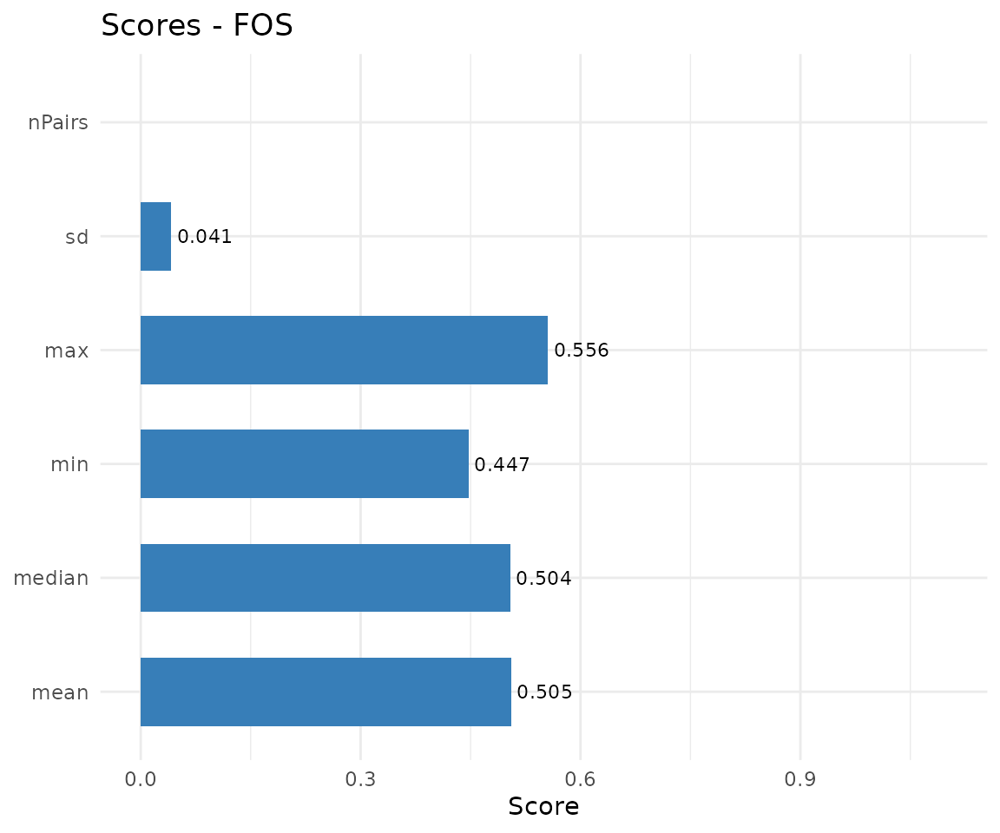

Alignment of Microbial Consortia
Source:vignettes/ConsortiumMetabolismAlignment.Rmd
ConsortiumMetabolismAlignment.RmdIntroduction
The ramen package provides tools for comparing microbial
communities based on their metabolic exchange networks. The
alignment system quantifies how similar two or more
communities are from a functional perspective – not by which species are
present, but by which metabolite-metabolite pathways they catalyse.
This vignette covers:
- Pairwise alignment – comparing two communities
- Multiple alignment – comparing all communities in a set
- Visualization – heatmaps, networks, and score plots
- Programmatic access – extracting results with accessor functions
Creating test data
We use synCM() to generate synthetic communities with
reproducible random metabolic networks. Each consortium has species with
random flux values across a shared metabolite pool.
cm_alpha <- synCM("Alpha", n_species = 5, max_met = 10, seed = 42)
cm_beta <- synCM("Beta", n_species = 5, max_met = 10, seed = 43)
cm_gamma <- synCM("Gamma", n_species = 4, max_met = 8, seed = 44)
cm_delta <- synCM("Delta", n_species = 6, max_met = 10, seed = 45)
cm_alpha
#>
#> ── ConsortiumMetabolism
#> Name: "Alpha"
#> Weighted metabolic network with 10 metabolites.Pairwise alignment
Basic usage
align(CM, CM) compares two
ConsortiumMetabolism objects and returns a
ConsortiumMetabolismAlignment (CMA) object.
cma <- align(cm_alpha, cm_beta)
cma
#>
#> ── ConsortiumMetabolismAlignment
#> Name: NA
#> Type: "pairwise"
#> Metric: "FOS"
#> Score: 0.4474
#> Query: "Alpha", Reference: "Beta"Similarity metrics
Five metrics are available via the method argument. All
four individual metrics are always computed; method selects
which becomes the primary score.
cma_fos <- align(cm_alpha, cm_beta, method = "FOS")
cma_jac <- align(cm_alpha, cm_beta, method = "jaccard")
cma_bc <- align(cm_alpha, cm_beta, method = "brayCurtis")
cma_ro <- align(cm_alpha, cm_beta, method = "redundancyOverlap")
## All scores are stored regardless of method choice
scores(cma_fos)
#> $FOS
#> [1] 0.4473684
#>
#> $jaccard
#> [1] 0.265625
#>
#> $brayCurtis
#> [1] 0.2616082
#>
#> $redundancyOverlap
#> [1] 0.202381| Metric | What it measures | Formula |
|---|---|---|
| FOS | Structural overlap (Szymkiewicz-Simpson) | |X AND Y| / min(|X|, |Y|) |
| Jaccard | Symmetric set similarity | |X AND Y| / |X OR Y| |
| Bray-Curtis | Flux-weighted similarity | 1 - sum|x-y| / sum(x+y) |
| Redundancy Overlap | Species labor distribution | weighted Jaccard on nSpecies |
| MAAS | Composite (0.4 FOS + 0.2 each) | weighted mean |
MAAS composite score
The Metabolic Alignment Aggregate Score combines all four metrics. Weights are renormalized when some metrics are unavailable (e.g., unweighted networks).
cma_maas <- align(cm_alpha, cm_beta, method = "MAAS")
cma_maas@PrimaryScore
#> [1] 0.3248702Pathway correspondences
The alignment classifies every metabolite-metabolite pathway as shared, unique to the query, or unique to the reference.
sp <- sharedPathways(cma)
head(sp[, c("consumed", "produced")])
#> # A tibble: 6 × 2
#> consumed produced
#> <chr> <chr>
#> 1 met1 met10
#> 2 met3 met10
#> 3 met4 met10
#> 4 met7 met10
#> 5 met8 met10
#> 6 met9 met10
up <- uniquePathways(cma)
nrow(sp) # shared
#> [1] 17
nrow(up$query) # unique to Alpha
#> [1] 26
nrow(up$reference) # unique to Beta
#> [1] 21Permutation p-values
Statistical significance is assessed by degree-preserving network rewiring. The query network’s pathways are shuffled while preserving each metabolite’s degree, and the metric is recomputed under the null.
cma_p <- align(
cm_alpha,
cm_beta,
method = "FOS",
computePvalue = TRUE,
nPermutations = 99L
)
cma_p@Pvalue
#> [1] 0.75Multiple alignment
Aligning a consortium set
align(CMS) computes pairwise similarities across all
consortia in a ConsortiumMetabolismSet and returns a CMA
with Type = "multiple".
cms <- ConsortiumMetabolismSet(
list(cm_alpha, cm_beta, cm_gamma, cm_delta),
name = "Demo"
)
cma_mult <- align(cms)
cma_multSimilarity matrix
The SimilarityMatrix is an n x n symmetric matrix with
1s on the diagonal. For FOS, this is derived directly from the
pre-computed CMS overlap matrix, guaranteeing numerical consistency.
round(similarityMatrix(cma_mult), 3)
#> Alpha Beta Gamma Delta
#> Alpha 1.000 0.447 0.556 0.538
#> Beta 0.447 1.000 0.481 0.526
#> Gamma 0.556 0.481 1.000 0.481
#> Delta 0.538 0.526 0.481 1.000Summary scores
The PrimaryScore for a multiple alignment is the
median of all pairwise scores. Full summary statistics
are available via scores().
scores(cma_mult)
#> $mean
#> [1] 0.5051107
#>
#> $median
#> [1] 0.5038986
#>
#> $min
#> [1] 0.4473684
#>
#> $max
#> [1] 0.5555556
#>
#> $sd
#> [1] 0.0413702
#>
#> $nPairs
#> [1] 6Consensus network and prevalence
Pathway prevalence counts how many consortia share each metabolite-metabolite pathway. This enables classification of pathways as core (present in most consortia) or niche (present in few).
prev <- prevalence(cma_mult)
head(prev[order(-prev$nConsortia), ])
#> consumed produced nConsortia proportion
#> 16 met1 met2 4 1.00
#> 22 met7 met2 4 1.00
#> 41 met1 met5 4 1.00
#> 66 met1 met8 4 1.00
#> 8 met1 met10 3 0.75
#> 9 met3 met10 3 0.75
## Distribution
table(prev$nConsortia)
#>
#> 1 2 3 4
#> 32 24 17 4Visualization
Heatmap (multiple alignment)
The heatmap shows pairwise similarities with dendrogram-based ordering.
plot(cma_mult, type = "heatmap")
Similarity heatmap across four consortia.
Network (pairwise alignment)
The network view shows shared (green), query-unique (blue), and reference-unique (red) pathways as a directed metabolite flow graph.
plot(cma, type = "network")
Pathway network: Alpha vs Beta.
Score comparison
The scores bar chart works for both pairwise and multiple alignments.
plot(cma, type = "scores")
Pairwise metric scores.
plot(cma_mult, type = "scores")
#> Warning: Removed 1 row containing missing values or values outside the scale range
#> (`geom_col()`).
#> Warning: Removed 1 row containing missing values or values outside the scale range
#> (`geom_text()`).
Multiple alignment summary scores.
Programmatic access
All CMA results are accessible via noun-style accessors with type
guards that prevent misuse (e.g., calling sharedPathways()
on a multiple alignment raises an informative error).
| Accessor | Type | Returns |
|---|---|---|
scores() |
both | Named list of scores |
sharedPathways() |
pairwise | data.frame of shared pathways |
uniquePathways() |
pairwise | list(query, reference) |
similarityMatrix() |
multiple | n x n numeric matrix |
prevalence() |
multiple | data.frame with nConsortia |
consensusPathways() |
multiple | data.frame (same as prevalence) |
metabolites() |
both | Character vector of metabolites |
pathways() |
both | data.frame of pathways |
Session info
sessionInfo()
#> R version 4.5.3 (2026-03-11)
#> Platform: x86_64-pc-linux-gnu
#> Running under: Ubuntu 24.04.4 LTS
#>
#> Matrix products: default
#> BLAS: /usr/lib/x86_64-linux-gnu/openblas-pthread/libblas.so.3
#> LAPACK: /usr/lib/x86_64-linux-gnu/openblas-pthread/libopenblasp-r0.3.26.so; LAPACK version 3.12.0
#>
#> locale:
#> [1] LC_CTYPE=C.UTF-8 LC_NUMERIC=C LC_TIME=C.UTF-8
#> [4] LC_COLLATE=C.UTF-8 LC_MONETARY=C.UTF-8 LC_MESSAGES=C.UTF-8
#> [7] LC_PAPER=C.UTF-8 LC_NAME=C LC_ADDRESS=C
#> [10] LC_TELEPHONE=C LC_MEASUREMENT=C.UTF-8 LC_IDENTIFICATION=C
#>
#> time zone: UTC
#> tzcode source: system (glibc)
#>
#> attached base packages:
#> [1] stats graphics grDevices utils datasets methods base
#>
#> other attached packages:
#> [1] ramen_0.0.0.9001 BiocStyle_2.38.0
#>
#> loaded via a namespace (and not attached):
#> [1] SummarizedExperiment_1.40.0 gtable_0.3.6
#> [3] ggplot2_4.0.2 xfun_0.57
#> [5] bslib_0.10.0 Biobase_2.70.0
#> [7] lattice_0.22-9 yulab.utils_0.2.4
#> [9] vctrs_0.7.2 tools_4.5.3
#> [11] generics_0.1.4 stats4_4.5.3
#> [13] parallel_4.5.3 tibble_3.3.1
#> [15] pkgconfig_2.0.3 Matrix_1.7-4
#> [17] RColorBrewer_1.1-3 S7_0.2.1
#> [19] desc_1.4.3 S4Vectors_0.48.0
#> [21] lifecycle_1.0.5 farver_2.1.2
#> [23] compiler_4.5.3 treeio_1.34.0
#> [25] textshaping_1.0.5 Biostrings_2.78.0
#> [27] Seqinfo_1.0.0 codetools_0.2-20
#> [29] htmltools_0.5.9 sass_0.4.10
#> [31] yaml_2.3.12 lazyeval_0.2.2
#> [33] pkgdown_2.2.0 pillar_1.11.1
#> [35] crayon_1.5.3 jquerylib_0.1.4
#> [37] tidyr_1.3.2 BiocParallel_1.44.0
#> [39] SingleCellExperiment_1.32.0 DelayedArray_0.36.0
#> [41] cachem_1.1.0 viridis_0.6.5
#> [43] abind_1.4-8 nlme_3.1-168
#> [45] tidyselect_1.2.1 digest_0.6.39
#> [47] dplyr_1.2.0 purrr_1.2.1
#> [49] bookdown_0.46 labeling_0.4.3
#> [51] TreeSummarizedExperiment_2.18.0 fastmap_1.2.0
#> [53] grid_4.5.3 cli_3.6.5
#> [55] SparseArray_1.10.9 magrittr_2.0.4
#> [57] S4Arrays_1.10.1 utf8_1.2.6
#> [59] ape_5.8-1 withr_3.0.2
#> [61] scales_1.4.0 rappdirs_0.3.4
#> [63] rmarkdown_2.30 XVector_0.50.0
#> [65] matrixStats_1.5.0 igraph_2.2.2
#> [67] gridExtra_2.3 ragg_1.5.2
#> [69] evaluate_1.0.5 knitr_1.51
#> [71] GenomicRanges_1.62.1 IRanges_2.44.0
#> [73] viridisLite_0.4.3 rlang_1.1.7
#> [75] dendextend_1.19.1 Rcpp_1.1.1
#> [77] glue_1.8.0 tidytree_0.4.7
#> [79] BiocManager_1.30.27 BiocGenerics_0.56.0
#> [81] jsonlite_2.0.0 R6_2.6.1
#> [83] MatrixGenerics_1.22.0 systemfonts_1.3.2
#> [85] fs_2.0.1